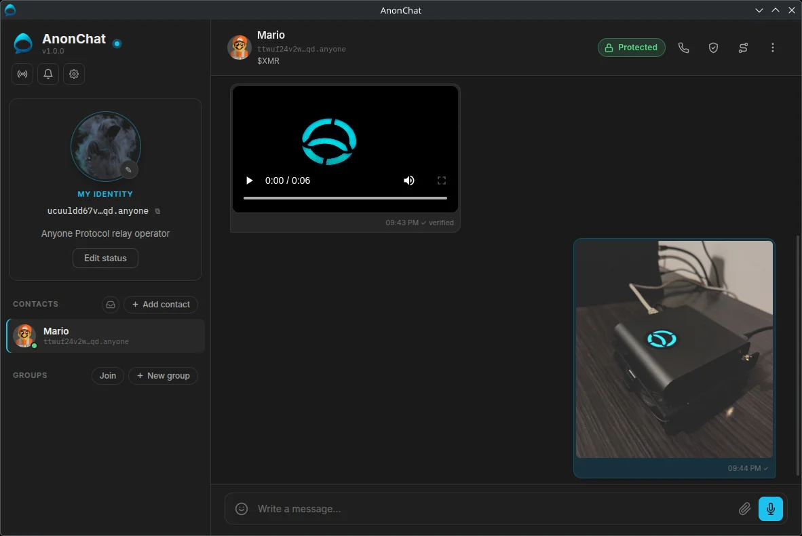
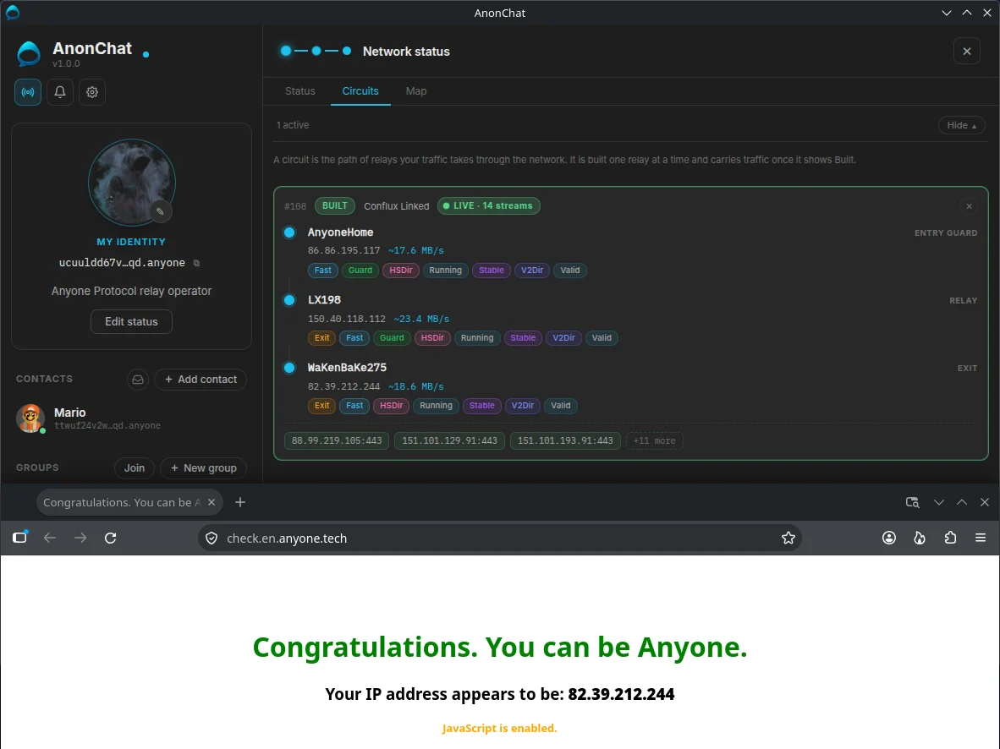
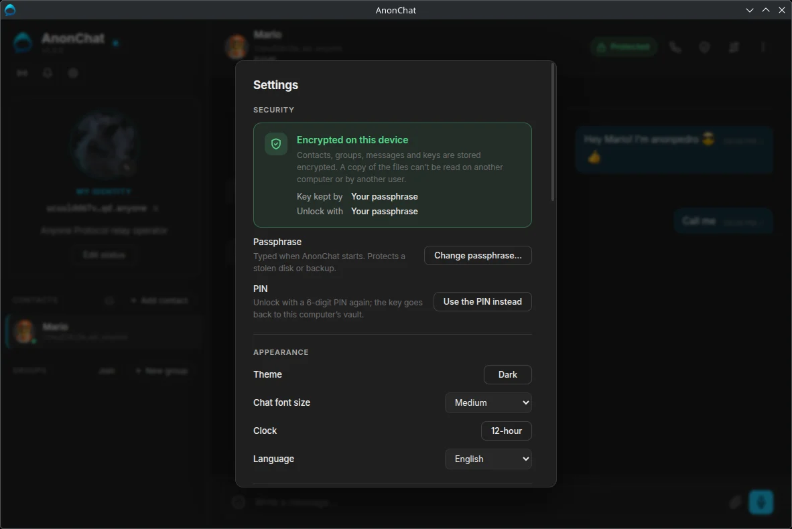
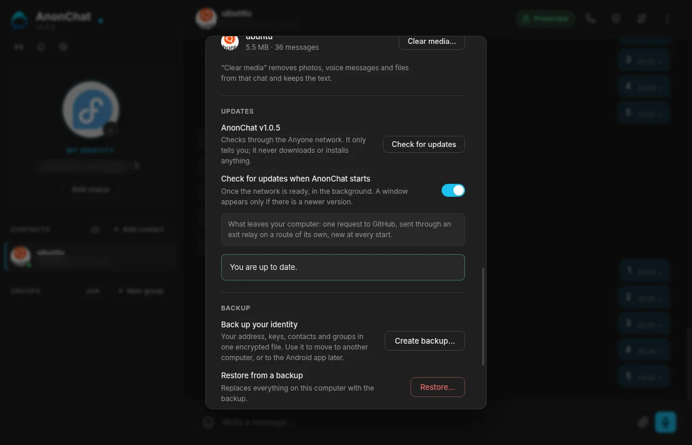

Every AnonChat is a small server of its own.
Your app is a hidden service on the Anyone network, reachable at your .anyone address and nowhere else. Messages go from your computer to your contact's, encrypted the whole way, without passing through any company.
Five relays and a meeting point. Neither side learns where the other is.
Your app builds a path of relays to a meeting point; your contact's app builds its own, one relay longer because theirs is the address being reached. The message crosses both, so your contact never sees your IP address and you never see theirs.
1 · Encrypted on your computer
Your app encrypts the message for your contact alone, with a key used for that message only.
2 · Carried by the network
Relays pass it along in layers of encryption. Each knows only its two neighbours.
3 · Delivered, then confirmed
Your contact's app stores it encrypted and confirms delivery: ✓, and ✓✓ once read if they share read receipts.
No server holds your messages. Your app does.
If your contact's app isn't running, your message waits on your computer with a ⏳ and is retried every 15 seconds, for 1, 12 or 24 hours, 3 days or 7 days, as you choose per chat (24 hours by default). When your contact comes back online, their app tells yours and everything waiting goes out at once; the same happens when they write to you. If messages to one contact still wait while they can write to you, Rebuild network path in that chat's ⋮ menu sends them right away.
A green or red dot on each contact shows whether they can be reached right now.

See every relay your traffic crosses.
A circuit is the chain of relays your traffic passes through, normally three. The network panel shows each one live: nickname, country, bandwidth and role.
Entry guard
The first relay, and the only one that sees your IP address. It never sees what you send or to whom.
Relay
A middle relay. It sees only the relays on either side of it.
Exit
Used only for traffic leaving the network, such as a website opened through the SOCKS5 proxy. Messages to contacts never use an exit.
Circuits, map and your own proxy
- Circuits tab: every circuit in use, with each relay's flags. Close one, or build a new one. During a call you make, the circuit carrying it is marked.
- Map tab: a 3D globe showing the circuit to a contact, or the one used by your proxy.
- SOCKS5 proxy: point a browser at
127.0.0.1:9050and its traffic goes through the Anyone network too. - Exit country: choose where proxy traffic leaves the network, or let it pick.

Three layers of protection.
The network hides where you are, encryption hides what you say, and your computer keeps everything locked.
| Protection | What it does for you |
|---|---|
| End-to-end encryption | Double Ratchet with an X3DH handshake (P-256, AES-256-GCM). Each message has its own key, so a key stolen later can't open earlier messages. |
| Weekly key refresh | The key a new contact uses to start a chat with you is replaced every week, and old ones are deleted after 60 days. Contacts take the new one only after checking its signature against the identity key they saved, so even a first message stays protected if a key is stolen later. |
| Pinned identity keys | A contact's key is fetched from their own address and kept, and never replaced silently. A message claiming to be them with another key is refused. |
| Safety numbers | Compare a short number in person or by phone. If it matches, nobody is in the middle. |
| Message requests and stamps | Strangers land in Requests, text only until you accept, marked Not verified yet until Accept checks the address. Messages between contacts carry a stamp only the two of you can make, so nobody can pose as a contact. |
| Flood protection | Small allowances for strangers, and a computing puzzle for non-contacts during a flood. |
| Encrypted on your computer | Contacts, messages, keys and media are stored encrypted, unlocked with a PIN through your system's vault, or with a passphrase that also protects a stolen disk. The one exception is your address's private key: the Anyone network client reads it from its own file, which only your user account can open. |
| Encrypted backups | A backup holds your address and keys, sealed with a passphrase of its own (at least 12 characters). AnonChat asks for your PIN or passphrase before making one. Message history and other people's pictures aren't included. |
| Locked to the network | The app can't connect to anything outside the Anyone network. Names are looked up inside it, and calls use no WebRTC or direct connection. |
| Private by default | Read receipts off unless you enable them. Notifications show the name only. Updates are checked only when you ask, or once at every start if you switch that on (it is off by default). |

PIN or passphrase?
With a PIN, your system's vault holds the key and the 6-digit PIN unlocks the app. It protects against someone opening AnonChat on your computer.
With a passphrase of at least 12 characters, the key never touches the vault, so a stolen disk or backup stays unreadable too.
Neither can be recovered if forgotten: there is no company to reset it.

Updates that don't give you away
Check for updates asks GitHub whether a newer version exists. With Check for updates when AnonChat starts on (it is off by default), AnonChat asks once at every start, after the network is ready.
The request goes through the Anyone network on a route of its own, new at every start. A newer version is shown once, with its download link. AnonChat never downloads or installs anything by itself.
Open the link in a SOCKS5 compatible browser set to the Anyone proxy, 127.0.0.1:9050: your usual browser would reach GitHub directly and show your IP address. Then check the file against SHA256SUMS.txt.
What AnonChat can't do.
No tool makes you invisible. Know the limits before you rely on one.
- No human audit yet. AnonChat has been audited by an AI model (Claude, by Anthropic), but it has not had a human security review yet. It uses established cryptography and open code.
- Only photos, videos and audio are cleaned. AnonChat removes location, camera model and time from them before sending and gives them a neutral name. Files sent as plain files (PDF, documents) go exactly as they are, so clean those first. A file that cannot be cleaned is not sent.
- Your computer is the weak point. Malware, or someone using it unlocked, sees what you see.
- What you send can be kept. A contact can copy or screenshot anything, disappearing messages included.
- Both apps must be running. Messages wait on your computer for the time you chose for that chat (24 hours by default, up to 7 days), then are marked undelivered.
- Messages take a few extra hops. Relays add a little latency you rarely notice. The first message after a contact comes back online can take a few seconds, and calls carry a delay of about 2 to 3 seconds.
- One computer at a time. No phone app and no sync. A backup moves your identity to a new computer; without one, losing the computer or the PIN means losing the identity.
- Using the network is visible. Your provider can see you use Anyone, not whom you talk to.
- Links open outside AnonChat. A link in a message opens in your usual browser, after a warning; unless that browser uses the SOCKS5 proxy, the site sees your IP address.
- The proxy isn't a privacy browser. Exits can see unencrypted traffic, and browsers have fingerprints.
Read the full guide.
Twenty-one pages on how AnonChat works and how to use it, with screenshots.